← 返回阅读库 · 原论文目录
论文讲解阅读文档 · 论文精读 · v211
AI视频生成即将革命！斯坦福用AI杂交暴砍98%算力成本！
视频时长 00:07:24；讲解文字 2,561 字符；提取讲解画面 62 张。按视频原顺序阅读，每段文字保留时间戳。
文字来自整段视频的自动语音转写，按自然停顿分段，并与 PPT / 论文页面 / 演示画面对齐。未将讲解压缩为摘要；术语、数字和口述公式请结合画面及原论文核对。 阅读稿已校正规范部分明确术语误识别；原始逐字稿和每处修改记录另行保留。
讲解画面为源视频截图（640×360），不是可编辑 PPT 文件。全片按每秒 2 帧扫描内容变化，逐步展开页保留；连续动画保留代表画面。清晰度受源视频限制。
下载完整资料包 · 含离线 HTML、PDF、Word、全部 PPT 画面和字幕。
原论文与材料
Exploring Diffusion Transformer Designs via Grafting · 下载完整 PDF（22 页）
按时间阅读
00:00:00–00:00:04 · 画面 001
00:00:00–00:00:04 · 画面 001当 Sora 用 DIT 架构颠覆视频生成当 Pika 让普通人玩转 AI 创作资团和团队确认重新训练一个 DIT 要烧掉百万算力值吗?今天我们精读这篇由李飞飞 Ermon 等 AI 巨头署名的神作 Grafting 看他们如何用嫁接术改造预训练模型用 2%算力生成 2K 高清图用 1.43 倍加速文生图
00:00:04–00:00:08 · 画面 002
00:00:04–00:00:08 · 画面 00200:00:08–00:00:09 · 画面 003
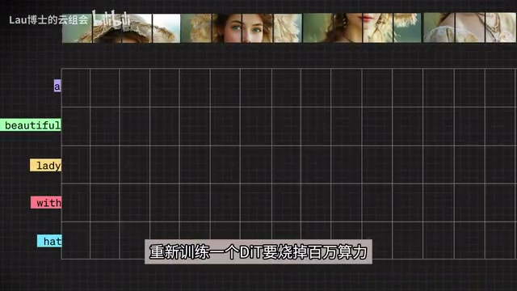
00:00:08–00:00:09 · 画面 00300:00:09–00:00:13 · 画面 004
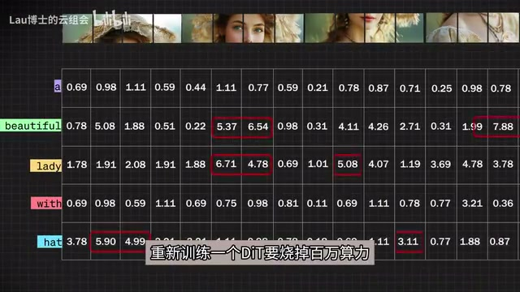
00:00:09–00:00:13 · 画面 00400:00:13–00:00:17 · 画面 005
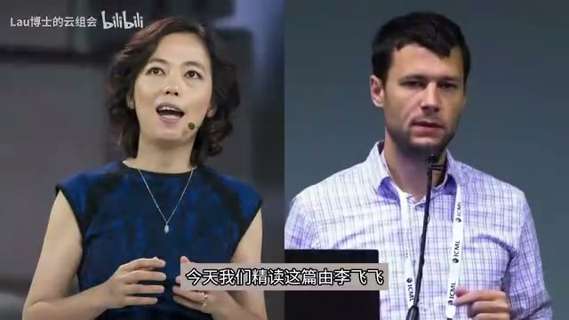
00:00:13–00:00:17 · 画面 00500:00:17–00:00:18 · 画面 006
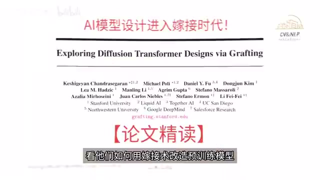
00:00:17–00:00:18 · 画面 00600:00:18–00:00:30 · 画面 007
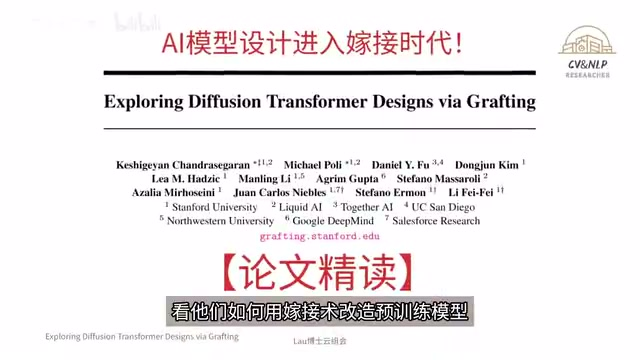
00:00:18–00:00:30 · 画面 007学会这招，你也能在现有的模型上魔改创新。欢迎来到 Lau 博士的云组会，我们每周都将至少有一篇高质量的论文精读发布出来。相信在一系列的论文学习以后，你就能成为人工智能领域的专家。我们来快速的了解嫁接到底是什么。现在无论是学术界还是工业界，基本都有一个共识，那就是大模型的架构设计是大公司的事。
00:00:30–00:00:39 · 画面 008
00:00:30–00:00:39 · 画面 00800:00:39–00:00:40 · 画面 009
00:00:39–00:00:40 · 画面 00900:00:40–00:00:44 · 画面 010
00:00:40–00:00:44 · 画面 01000:00:44–00:00:48 · 画面 011
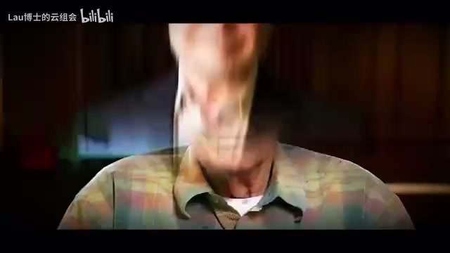
00:00:44–00:00:48 · 画面 01100:00:48–00:00:51 · 画面 012
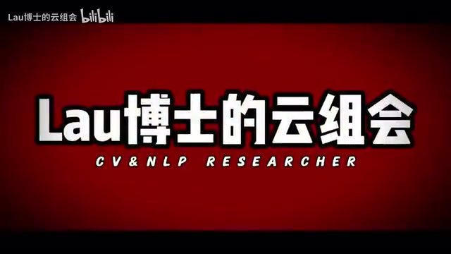
00:00:48–00:00:51 · 画面 01200:00:51–00:01:13 · 画面 013
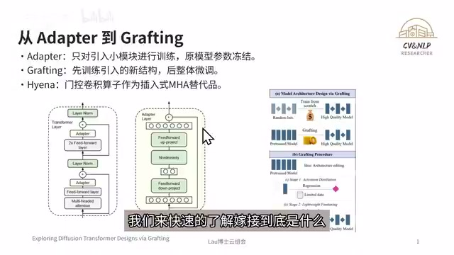
00:00:51–00:01:13 · 画面 013因为创意成本实在是太高了，普通的团队只能改改模型的小组件，做点模型的微调。比如说我现在要训练一个全新的架构，以前的做法就是随机初始化参数，然后从头开始预训练。这就像我要改造汽车，却要把汽车的设计流程从头到尾都走一遍，成本非常的高。而现在李飞飞的团队开发的 AI 嫁接术，
00:01:13–00:01:17 · 画面 014
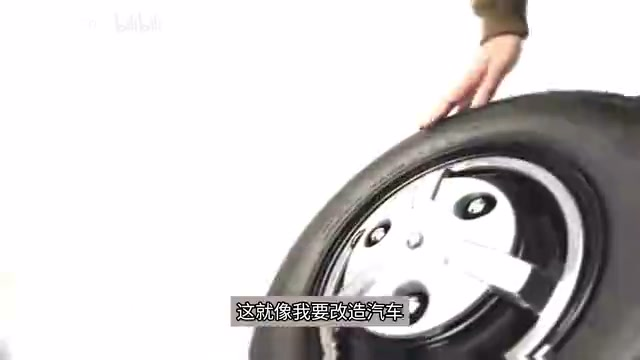
00:01:13–00:01:17 · 画面 01400:01:17–00:01:21 · 画面 015
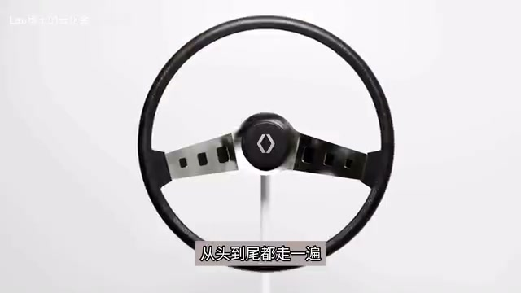
00:01:17–00:01:21 · 画面 01500:01:21–00:01:40 · 画面 016
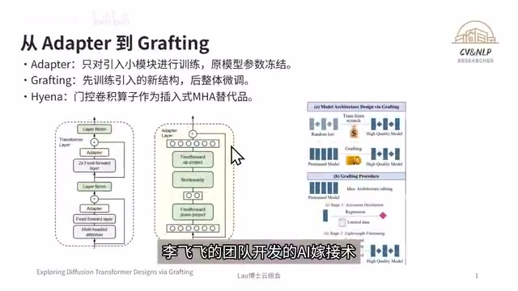
00:01:21–00:01:40 · 画面 016能够基于任何一个开源模型做架构创新，而且无需预训练，大幅降低了模型架构设计的成本，让小团队也能进行自主架构的设计。有同学可能会问，这个和之前的 Adapter 又有什么样的区别？Adapter 通常是在预训练模型的每一层或是特定层之间插入轻量级的适配器模块，通常是全连接层或是卷积层。
00:01:40–00:01:41 · 画面 017
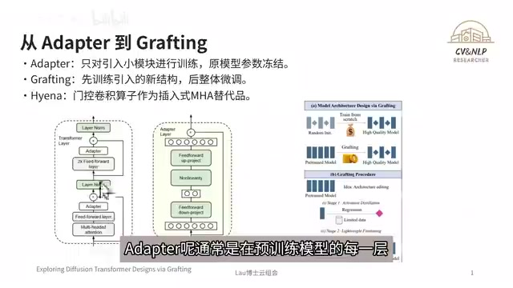
00:01:40–00:01:41 · 画面 01700:01:41–00:01:50 · 画面 018
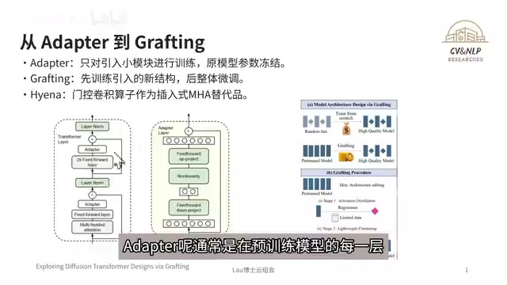
00:01:41–00:01:50 · 画面 018那这些适配器的模块的参数会比较少，用于调整模型的输出来适应新的任务，主体的架构是不会做改变的。在训练的范围上面，Adapter 主要训练的是适配器的模块的参数，而预训练的模型的主体的参数通常是保持固定的。对 Grafting 也就是嫁接，它是直接替换预训练模型当中的某些操作符。
00:01:50–00:02:09 · 画面 019
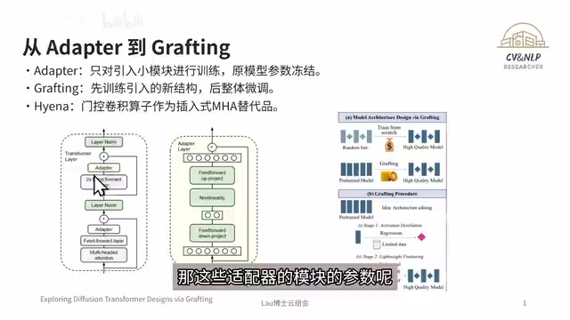
00:01:50–00:02:09 · 画面 01900:02:09–00:02:43 · 画面 020
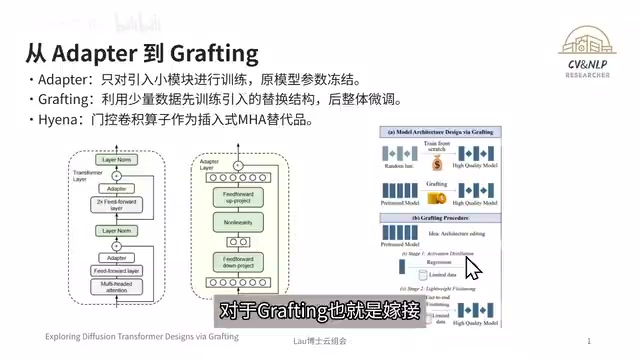
00:02:09–00:02:43 · 画面 020比如像多头注意力机制 MHA 或者是多层感知机 MLP 用新的操作符比如像局部卷积或是线性注意力或是本轮提出的 Hyena-X 和 Hyena-Y 来直接代替它的训练分为两个阶段第一个阶段叫做激活蒸馏激活蒸馏通过少量的数据对引入的替换架构进行训练第二个阶段叫轻量级微调使用有限的数据对整个模型进行微调来恢复到模型的性能
00:02:43–00:02:44 · 画面 021
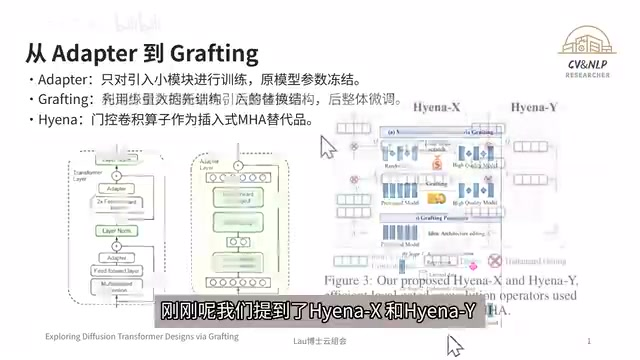
00:02:43–00:02:44 · 画面 021刚刚我们提到了 Hyena-X 和 Hyena-Y，它们具体都是什么呢？我们来看这幅图，Hyena 都包括以下的三种结构，分别是短显式卷积、密集连接以及它的门控。Hyena-X 和 Hyena-Y 它们注重的地方是不一样的。
00:02:44–00:02:58 · 画面 022
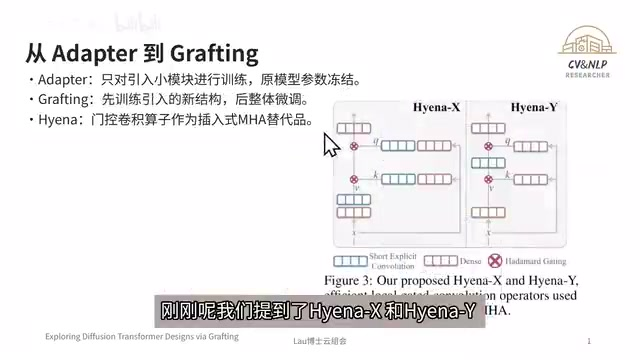
00:02:44–00:02:58 · 画面 02200:02:58–00:03:00 · 画面 023
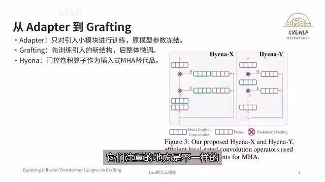
00:02:58–00:03:00 · 画面 023Hyena-X 是在保持局部性的同时通过密集、连接以及门控机制增强了在特征表达的能力以及灵活性也就表明它更注重的是性能方面的表现而 Hyena-Y 相比 Hyena-X 做了进一步的结构上的简化它主要依赖短显式卷积以及门控来实现高效的特征提取显扬了
00:03:00–00:03:31 · 画面 024
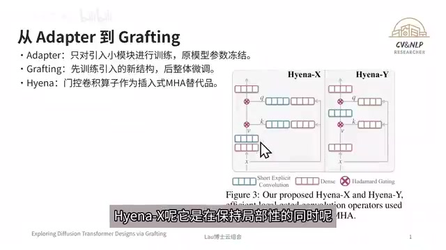
00:03:00–00:03:31 · 画面 024Hyena-Y 更注重计算上的效率，来降低计算的成本，同时又保持局部性以及灵活性。从最近几期的论文解读可以发现，AI 领域越来越多的大佬已经将研究方向从拼算力比模型大小转向更务实的降本增效上。正好高考结束，马上就要钱爆资源了，那人工智能相关专业都是这几年的爆款。
00:03:31–00:03:35 · 画面 025
00:03:31–00:03:35 · 画面 02500:03:35–00:03:36 · 画面 026
00:03:35–00:03:36 · 画面 02600:03:36–00:03:40 · 画面 027
00:03:36–00:03:40 · 画面 02700:03:40–00:03:41 · 画面 028
00:03:40–00:03:41 · 画面 02800:03:41–00:03:44 · 画面 029
00:03:41–00:03:44 · 画面 02900:03:44–00:03:46 · 画面 030
00:03:44–00:03:46 · 画面 03000:03:46–00:03:48 · 画面 031
00:03:46–00:03:48 · 画面 03100:03:48–00:03:49 · 画面 032
00:03:48–00:03:49 · 画面 032有自学习 AI 的同学不妨多关注这一趋势，结合数学、工程与行业痛点，用技术创造真实的价值。未来属于能让 AI 落地的人，也欢迎关注我们，随时了解 AI 最前沿。那回到论文中来，当 Sora 用一分钟的视频震惊世界的时候，很少有人知道训练这样的模型需要扫掉多少 GPU。论文的第一页又明确指出，当前的架构障碍最大的就是天文数字榜的训练成本。
00:03:49–00:03:53 · 画面 033
00:03:49–00:03:53 · 画面 03300:03:53–00:03:54 · 画面 034
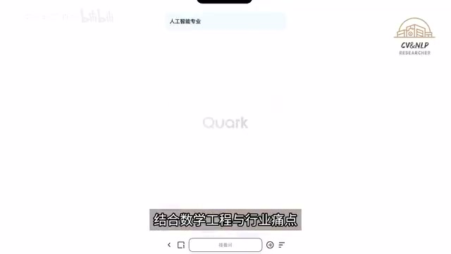
00:03:53–00:03:54 · 画面 03400:03:54–00:03:58 · 画面 035
00:03:54–00:03:58 · 画面 03500:03:58–00:04:04 · 画面 036
00:03:58–00:04:04 · 画面 03600:04:04–00:04:17 · 画面 037
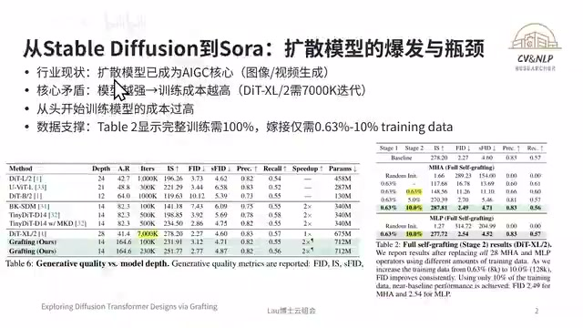
00:04:04–00:04:17 · 画面 037文章的 Table 2 也告诉我们嫁接技术能把训练样本压缩到惊人的 0.63%到 10%为什么架构的创新这么难呢？因为传统的方法要求每次都要重头训练，这就像每次想改装汽车都必须要重新发明的样子。这篇论文的图一就展示了革命性的思路，对预训练的模型进行编辑，直接改造现有的结构。
00:04:17–00:04:20 · 画面 038
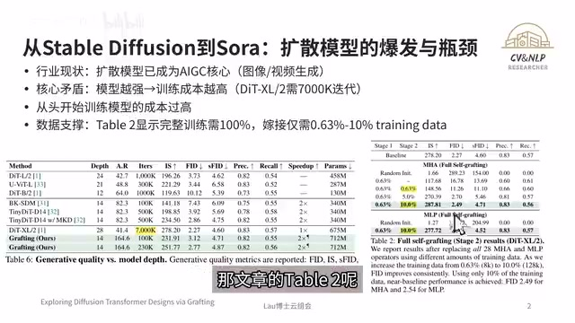
00:04:17–00:04:20 · 画面 03800:04:20–00:04:25 · 画面 039
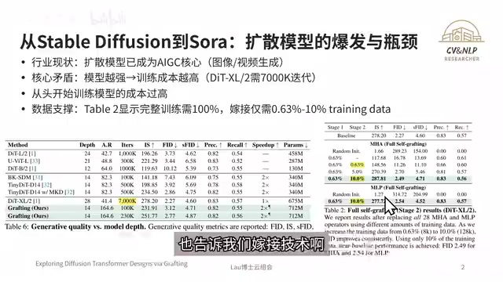
00:04:20–00:04:25 · 画面 03900:04:25–00:04:43 · 画面 040
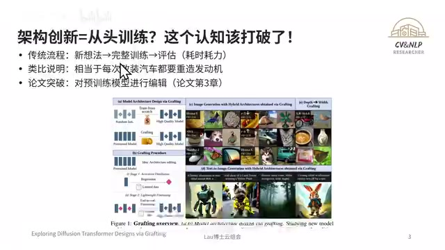
00:04:25–00:04:43 · 画面 040Figure 2 就表明超过一半的注意力层其实只需要处理临近的 token。这意味着不少的模型一直都在为没有必要的全局计算买单。Table 4 也证明了用 Hyena-X 替换 50%的注意力层，FID 仅从 2.27 升到了 2.74，却能省下 49.9%的计算量。接下来我将从技术原理、实验验证局限性分析以及未来工作进行展开。
00:04:43–00:05:04 · 画面 041
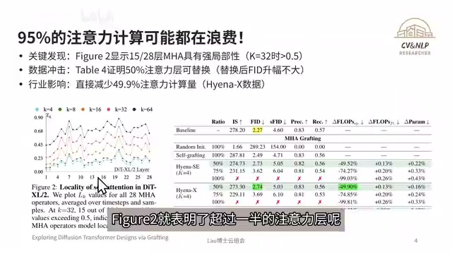
00:04:43–00:05:04 · 画面 04100:05:04–00:05:05 · 画面 042
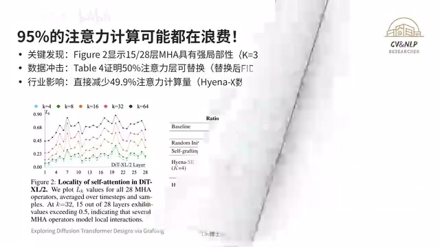
00:05:04–00:05:05 · 画面 04200:05:05–00:05:10 · 画面 043
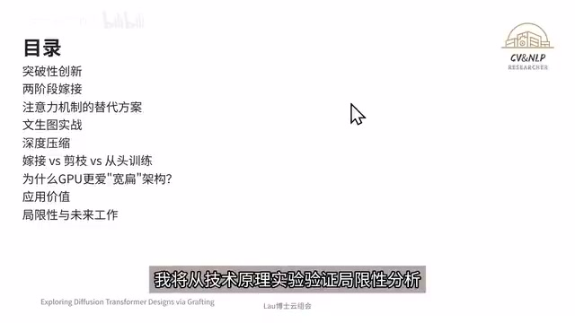
00:05:05–00:05:10 · 画面 04300:05:10–00:05:11 · 画面 044
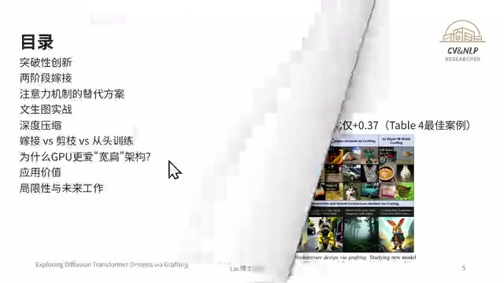
00:05:10–00:05:11 · 画面 044自然界的嫁接技术给了研究者惊人的启发。预训练模型就像是果树的砧木，提供了稳定的养分输送，而新加入的 Hyena 算子就是优质的接穗。通过图一所示的激活蒸馏，形成了新的连接层。最神奇的是植物的嫁接还有 50%的失败概率，而模型嫁接的 FID 波动可以控制在 0.37 以内。
00:05:11–00:05:34 · 画面 045
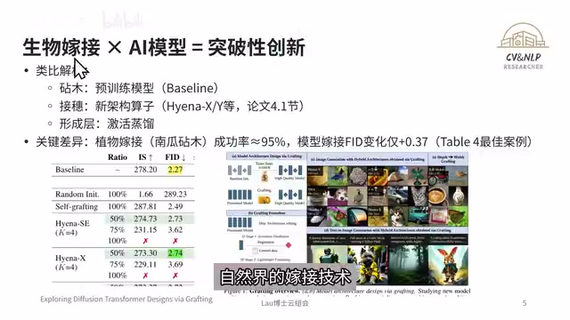
00:05:11–00:05:34 · 画面 04500:05:34–00:05:35 · 画面 046
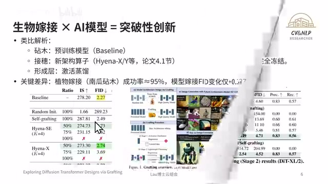
00:05:34–00:05:35 · 画面 046两阶段的嫁接就是论文的核心。第一阶段用 8K 的样本就能让新算子克拢旧算子的行为，相比 Random Init 有了大幅的提升。第二阶段更加的惊人，仅用 10%的数据对模型进行微调，就能达到相当甚至是超越 Baseline 的性能。Hyena-Y 以 FID2.72 取得 Hyena 系列嫁接的最佳性能，而 Hyena-X 则拿下了 FLOPs -49.9%的成绩。但并不是所有的层都适合替换。
00:05:35–00:05:51 · 画面 047
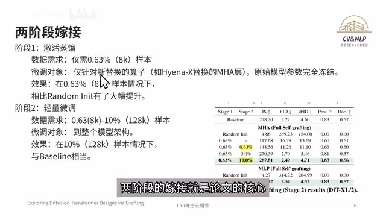
00:05:35–00:05:51 · 画面 04700:05:51–00:06:09 · 画面 048
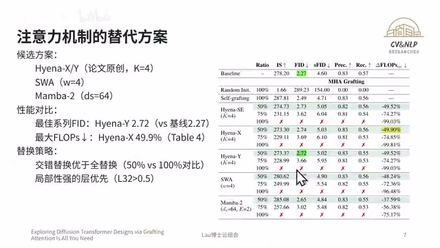
00:05:51–00:06:09 · 画面 048要优先选择局部性强的层而且 50%的交错替换会比全替换更加的稳妥在文生图的实验当中给 PixArt-Σ嫁接上 Hyena-X 以后推理的速度直接 1.43 倍起飞虽然 GenEval 的分数降了 2 分但成本可想而知仅用 12K 的合成数据和 Lora 的技术就达到了这个效果
00:06:09–00:06:24 · 画面 049
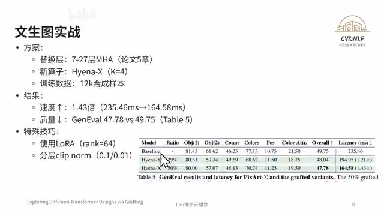
00:06:09–00:06:24 · 画面 04900:06:24–00:06:25 · 画面 050
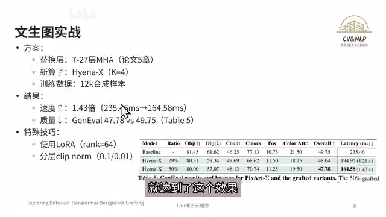
00:06:24–00:06:25 · 画面 050在深度压缩方面，把 28 层压缩成 14 层以后，FID 竟然还能达到 2.77，连压了这张 table 里面其他的 14 层的模型。更奇妙的是这种宽扁的结构特别适合 GPU 的并行计算，实际的推理速度还能更快。三种方案的对比，嫁接不仅以 FID 2.77 打败了剪枝方案 2.86，更关键的是剪枝只能做减法，而嫁接能重组架构。想想成本的差距，嫁接仅用 10%的数据。
00:06:25–00:06:40 · 画面 051
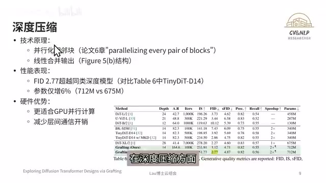
00:06:25–00:06:40 · 画面 05100:06:40–00:06:41 · 画面 052
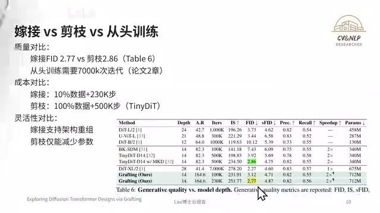
00:06:40–00:06:41 · 画面 05200:06:41–00:06:46 · 画面 053
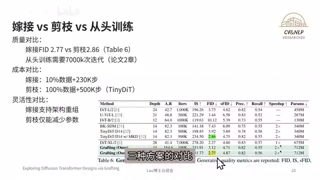
00:06:41–00:06:46 · 画面 05300:06:46–00:06:52 · 画面 054
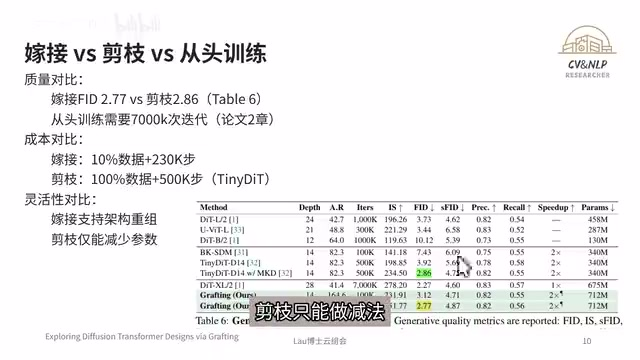
00:06:46–00:06:52 · 画面 05400:06:52–00:06:57 · 画面 055
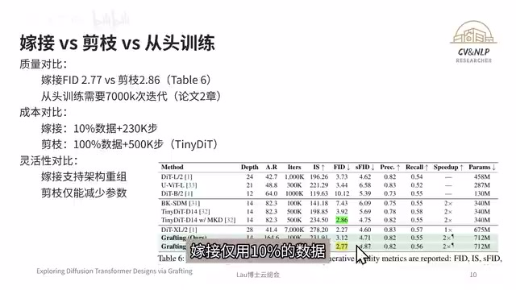
00:06:52–00:06:57 · 画面 055230K 步，而剪枝需要完整的训练数据 500K 步。嫁接技术是有边界的，论文指出它目前只能改造注意力机制 MHA 以及 MLP，而且需要预训练的模型。Figure D.4 更显示低质量的合成数据会带来问题。但是未来以来自动化嫁接和跨模态的移植可能就是下一代的架构探索的方向。
00:06:57–00:06:58 · 画面 056
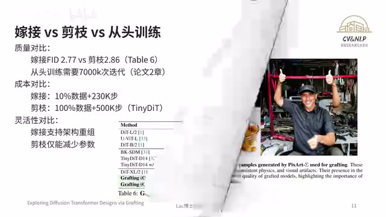
00:06:57–00:06:58 · 画面 05600:06:58–00:07:08 · 画面 057
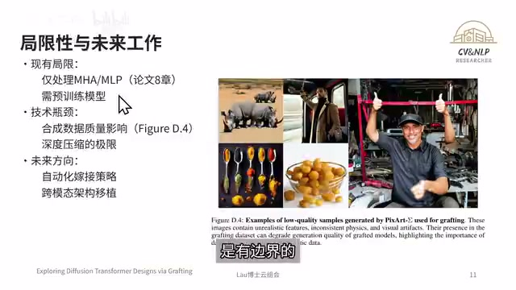
00:06:58–00:07:08 · 画面 05700:07:08–00:07:11 · 画面 058
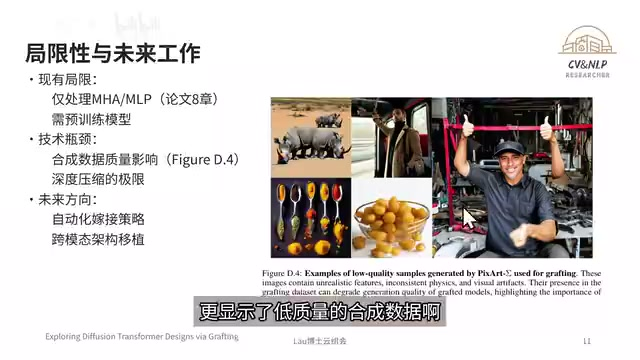
00:07:08–00:07:11 · 画面 05800:07:11–00:07:16 · 画面 059
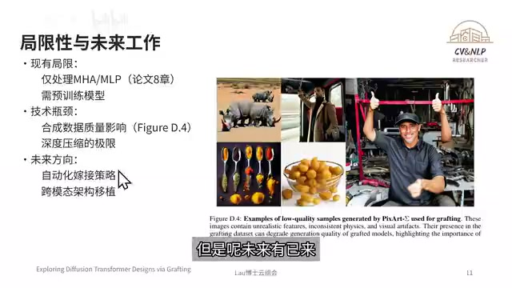
00:07:11–00:07:16 · 画面 05900:07:16–00:07:22 · 画面 060
00:07:16–00:07:22 · 画面 060今天的云组会我们就开到这里。如果对你有所启发，感谢三连加关注。如果你有什么想法，欢迎留言。我们下一期不见不散。
00:07:22–00:07:23 · 画面 061
00:07:22–00:07:23 · 画面 06100:07:23–00:07:24 · 画面 062
00:07:23–00:07:24 · 画面 062转写与来源说明 · 0 个自动复核提示
保留 18 个原始语音片段，0 个片段触发自动复核提示。提示仅用于定位可能的术语、重复或识别问题，不等于已确认错误。
讲解画面为源视频截图（640×360），不是可编辑 PPT 文件。全片按每秒 2 帧扫描内容变化，逐步展开页保留；连续动画保留代表画面。清晰度受源视频限制。
原视频：paper/合集_2026-10-16_论文精读/AI视频生成即将革命！斯坦福用AI杂交暴砍98%算力成本！【论文精读】.mp4
SHA-256：59e720aee4ed86e570ff96e9ed982c55feabbd3bd94d90d9edaeb85fdc65ffd7
全文按视频语音与画面制作。原论文可从上方链接下载；完整资料包保留全文、原始逐字稿、字幕和校对记录。